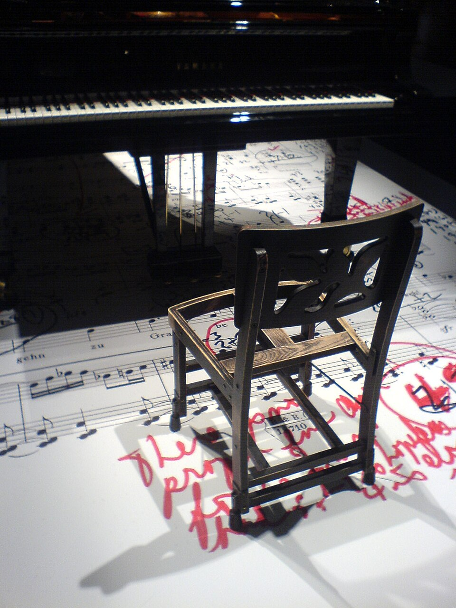

Object · Issue 01 · September 2026
By almost any conventional measure, the chair should have been thrown away.
Its legs have been sawed down and fitted with small brass hardware — brackets and half of a turnbuckle on each leg, allowing every corner to be raised or lowered independently, so that no two legs necessarily match. Inside the frame, wiring and a length of wood have been added simply to keep the thing from collapsing. The seat has the general shape of something meant for a card table, not a concert stage: a plain wooden folding chair, the kind that would once have come stacked six to a set, unremarkable except that this one no longer folds quite right and no longer looks like the others in whatever set it came from.
It belonged to Glenn Gould.
The chair began, sometime in the 1930s, as one of a set of folding bridge chairs manufactured in London, Ontario — the kind of furniture built for a card game, not a career. In 1953, Gould's father, Russell "Bert" Gould, modified it for his son, sawing roughly four inches off each leg and rigging a mechanism that let every leg be adjusted on its own.
4″
Removed from each leg
14″
How high Gould sat at the keyboard
The result put Gould some six inches lower than a standard piano bench — low enough that, at the keyboard, his face sometimes hovered only inches above the keys. Gould asked for this specifically. His technique, built around close, controlled contact with the keys rather than height and leverage, seemed to depend on sitting almost inside the instrument rather than above it. Once the chair existed, he stopped using anything else. Not occasionally, not as a preference among several options — every concert, every recording, for the next twenty-nine years, until his death in 1982.
He also stopped travelling without it. Accounts from recording engineers describe him arriving at sessions already carrying the chair alongside towels, pills, and bottles of water, adjusting each leg by hand before he would sit down to play — a small, private ritual repeated before a Bach recording the same way it would be repeated before anything else. At various points, his management and his record label tried to find or build a sturdier replacement. According to his longtime recording engineer Lorne Tulk, Gould's father modified at least one backup chair the same way, and Gould carried both for a time — but there's no real evidence he ever seriously used anything except the original. Every substitute, however carefully built, was apparently not quite it.
Every concert.
Every recording.
Twenty-nine years.
That kind of loyalty asks a great deal of an object, and this one visibly paid for it. Decades of use wore down the upholstery and loosened the frame until the chair needed internal reinforcement just to keep standing — the wiring and wood bracing weren't a design feature, they were damage control. By the end, it looked less like an instrument's companion piece than something salvaged from a curbside pile: a chair that had been fixed just enough times to keep functioning, and no more.
Which raises the more interesting question the chair leaves behind, once the biography is set aside: what does good design even mean, if the answer depends entirely on who's using it? Judged on its own, this is not a well-made chair. It is unstable enough to require internal bracing. Its legs don't match. It has been pushed so far past its original purpose that it barely qualifies as a chair anymore. And yet, for exactly one person, for exactly one specific and unusual way of sitting at a piano, it seems to have worked perfectly — well enough that its owner would rather keep repairing a barely-standing folding chair than trust a new one built to the same specifications.
After Gould's death in October 1982, the chair passed to Library and Archives Canada along with the rest of his estate — some two hundred boxes of personal and professional material, acquired the following year. For over two decades it sat in a glass case in the library's music division on Wellington Street in Ottawa, visible to anyone who happened to walk past on the way to the elevators. In 2005 it was moved into storage, brought out only for occasional exhibitions. In June 2012, Library and Archives Canada transferred it, along with Gould's Steinway CD 318, as a permanent gift to the National Arts Centre.
The piano now has a fixed public home at the NAC, on permanent display outside Southam Hall. The chair does not. It's kept by the same institution, in the same city, but shown only on special occasions — which means that for most of any given year, the object this entire story is about is sitting somewhere most people will never see it: low to the ground, legs slightly uneven, waiting to be brought out again.